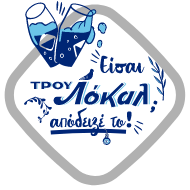

Συλλεκτικές
συσκευασίες
Δώρα
Πάρκο
ΦΙΞ!
Καταχωρησε τις ιδεες και μπες στην κληρωση
Διάλεξε μία από τις παρακάτω ιδέες και σύρε το pin στο σημείο του χάρτη που θα ήθελες να αλλάξει.
ΠΕΡΙΣΣΟΤΕΡΟ ΠΡΑΣΙΝΟ
ΛΙΓΟΤΕΡΕΣ ΚΕΡΑΙΕΣ
ΛΙΓΟΤΕΡΑ ΓΚΡΑΦΙΤΙ
ΡΑΜΠΕΣ ΓΙΑ ΑΜΕΑ
ΠΕΡΙΣΣΟΤΕΡΑ ΠΑΓΚΑΚΙΑ
ΠΟΤΗΣΤΡΕΣ ΓΙΑ ΤΑ ΑΔΕΣΠΩΤΑ
ΠΕΡΙΣΣΟΤΕΡΟ ΦΩΣ ΣΤΟΥΣ ΔΡΟΜΟΥΣ
ΠΕΡΙΣΣΟΤΕΡΟΙ ΚΑΔΟΙ ΑΝΑΚΥΚΛΩΣΗΣ
ΓΡΑΨΕ ΜΑΣ ΤΗ ΔΙΚΗ ΣΟΥ ΙΔΕΑ
Όροι και προϋποθέσεις
Πολιτική απορρήτου
Ρυθμίσεις Cookies